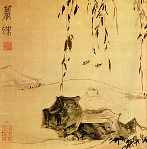

逍遥齐物 · 游心太虚 · 8课时
庄子以汪洋恣肆的寓言，展现超越世俗的精神境界。，以「心即理→知行合一→致良知→四句教」为经线，贯通阳明心学从奠基到完成的完整图景。核心线索：传习录是中国哲学史上最完整的「二阶性」教学记录——庄子以汪洋恣肆的寓言，展现超越世俗的精神境界。勇哥带学人体会「逍遥游」的真实义。
Day 1：阳明心学的奠基——心即理·知行合一·心外无物Day 2：致良知——二阶性的完成形态
心即理·知行合一·致良知·四句教·事上磨炼·二阶性·吾心光明